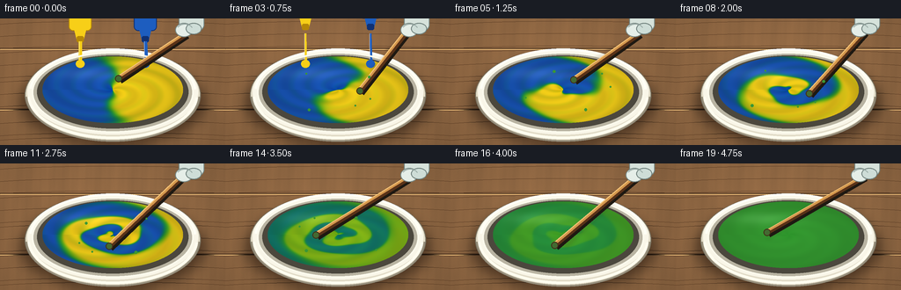
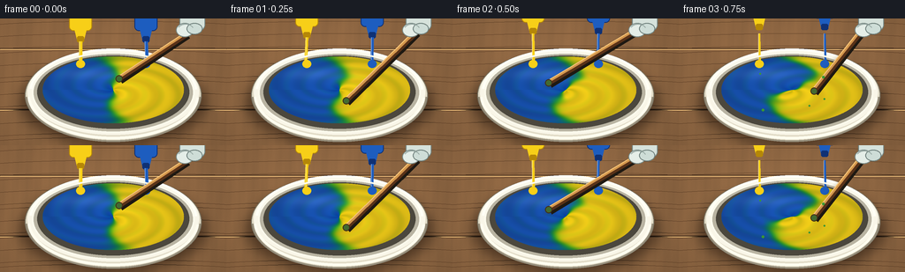

CODING AGENTS AS PIXEL WORLD MODELS
traex/GPT-5.6-Sol · material_0000
点击播放 · 原生 RGB 像素
逐轮保存的候选
回放视频、检查图与代码变化。
每份候选均可单独播放。实际图片检查记录在下方工具轨迹中。
候选 01播放与检查图
点击播放 · 原生 RGB 像素

展开代码变化
--- 上一保存版本
+++ 本次保存版本
@@ -0,0 +1,193 @@
+from pathlib import Path
+import math
+import numpy as np
+from PIL import Image, ImageDraw, ImageFilter
+import artifact_io
+
+# Deterministic, supersampled procedural animation.
+W, H, N = 256, 144, 20
+S = 3
+w, h = W*S, H*S
+rng = np.random.default_rng(7319)
+
+def scbox(box): return tuple(int(round(v*S)) for v in box)
+def pt(p): return tuple(int(round(v*S)) for v in p)
+def smoothstep(x):
+ x = np.clip(x, 0.0, 1.0)
+ return x*x*(3-2*x)
+
+def background(frame):
+ yy, xx = np.mgrid[0:h, 0:w]
+ # warm maple worktop, with subtle animated camera/light variation
+ base = np.zeros((h,w,3), dtype=np.float32)
+ grain = (2.8*np.sin(xx/20.0 + 0.7*np.sin(yy/37.0)) +
+ 1.5*np.sin(xx/6.2 + yy/53.0) +
+ 0.7*np.sin(xx/2.5))
+ light = 1.0 - 0.18*np.sqrt(((xx-w*.47)/(w*.72))**2 + ((yy-h*.42)/(h*.9))**2)
+ base[...,0] = 154 + grain
+ base[...,1] = 111 + grain*.68
+ base[...,2] = 72 + grain*.42
+ base *= light[...,None]
+ # fine fixed wood pores (stable across video)
+ pores = rng_for_bg.normal(0, 0.65, (h,w))
+ base += pores[...,None]
+ im = Image.fromarray(np.uint8(np.clip(base,0,255)), 'RGB').convert('RGBA')
+ d = ImageDraw.Draw(im, 'RGBA')
+ for y in (34, 103):
+ d.line([(0,y*S),(w,y*S)], fill=(69,45,28,45), width=S)
+ d.line([(0,y*S+S),(w,y*S+S)], fill=(235,188,121,30), width=1*S)
+ # a few natural long grain marks
+ for k in range(13):
+ gy = int((8 + k*11 + (k%3)*3)*S)
+ d.arc(scbox((-20, gy/S-5, 278, gy/S+9)), 190, 348,
+ fill=(82,53,31,18), width=max(1,S//2))
+ return im
+
+rng_for_bg = np.random.default_rng(194)
+
+# reusable high-resolution coordinate fields
+Y, X = np.mgrid[0:h, 0:w]
+cx, cy, rx, ry = 128*S, 81*S, 80*S, 38*S
+U=(X-cx)/rx; V=(Y-cy)/ry
+R=np.sqrt(U*U+V*V); TH=np.arctan2(V,U)
+paint_mask = R <= 1
+
+# soft contact shadow
+shadow_layer = Image.new('RGBA',(w,h),(0,0,0,0))
+sd=ImageDraw.Draw(shadow_layer,'RGBA')
+sd.ellipse(scbox((24,48,232,143)), fill=(31,18,10,145))
+shadow_layer=shadow_layer.filter(ImageFilter.GaussianBlur(7*S))
+
+def draw_bowl_base(im):
+ im.alpha_composite(shadow_layer)
+ d=ImageDraw.Draw(im,'RGBA')
+ # ceramic outer wall, modeled by nested ellipses
+ d.ellipse(scbox((28,34,228,140)), fill=(226,220,200,255), outline=(120,113,96,220), width=1*S)
+ d.ellipse(scbox((31,35,225,132)), fill=(249,246,232,255))
+ d.ellipse(scbox((37,39,219,128)), fill=(185,180,162,255))
+ d.ellipse(scbox((42,42,214,125)), fill=(75,71,61,255))
+ # rear inner porcelain glint
+ d.arc(scbox((33,34,223,132)), 184, 357, fill=(255,255,246,220), width=3*S)
+
+def make_paint(frame):
+ p=frame/(N-1)
+ # Numerous rapid rotations make two equal pools into interleaved ribbons.
+ # Source is exactly half yellow, half blue at p=0.
+ swirl = (10.8*smoothstep(p/0.70)*(1-R)**1.35 +
+ 1.05*p*np.sin(3*TH - 6*R + frame*.70)*(1-R))
+ source_ang = TH - swirl
+ boundary = np.cos(source_ang) + .12*np.sin(3*source_ang + 7*R - frame*.35)
+ sharp = 12.0 - 5.5*smoothstep(p/.55)
+ q0 = 1/(1+np.exp(-sharp*boundary)) # 1 yellow, 0 blue
+ # Homogenize decisively over the final third, leaving only tiny natural variation.
+ hom = smoothstep((p-.55)/.38)
+ q = .5 + (q0-.5)*(1-hom)
+ q += (1-hom)*.025*np.sin(26*R - 4*TH + frame*1.2)
+ q=np.clip(q,0,1)
+ mix=4*q*(1-q)
+ # pigment-like subtractive mixing: endpoints are primary blue/yellow,
+ # middle is a clean green rather than an RGB gray.
+ rr=24*(1-q)+244*q-80*mix
+ gg=84*(1-q)+207*q+12*mix
+ bb=181*(1-q)+25*q-53*mix
+ # concave glossy paint surface, with rotating highlights and central vortex
+ shade = 0.86 + .13*(1-R) + .045*np.sin(19*R-3.8*TH+frame*1.45)*(1-hom*.75)
+ spec = np.exp(-((U+.34)**2/.20 + (V+.48)**2/.035))*22
+ vortex = np.exp(-(R/.14)**2)
+ rr=rr*shade + spec - 16*vortex*(1-hom*.5)
+ gg=gg*shade + spec - 13*vortex*(1-hom*.5)
+ bb=bb*shade + spec - 12*vortex*(1-hom*.5)
+ arr=np.zeros((h,w,4),dtype=np.uint8)
+ arr[...,0]=np.uint8(np.clip(rr,0,255)); arr[...,1]=np.uint8(np.clip(gg,0,255)); arr[...,2]=np.uint8(np.clip(bb,0,255))
+ # antialiased mask generated by blur at supersampled resolution
+ arr[...,3]=np.where(paint_mask,255,0).astype(np.uint8)
+ pim=Image.fromarray(arr,'RGBA')
+ return pim
+
+def draw_pours(im, frame):
+ if frame>4: return
+ fade = 1.0 if frame<3 else (5-frame)/2
+ d=ImageDraw.Draw(im,'RGBA')
+ lift=frame*4.7
+ # bottles are cropped by the top edge, identically sized to emphasize equal quantities
+ for x, color, edge in [(91,(247,207,24),(181,135,8)),(165,(29,93,191),(15,49,117))]:
+ # bottle shoulder and neck
+ d.rounded_rectangle(scbox((x-13,-16-lift,x+13,14-lift)), radius=5*S,
+ fill=color+(int(235*fade),), outline=edge+(int(210*fade),), width=S)
+ d.polygon([pt((x-7,12-lift)),pt((x+7,12-lift)),pt((x+4,24-lift)),pt((x-4,24-lift))],
+ fill=color+(int(245*fade),))
+ d.rounded_rectangle(scbox((x-4,20-lift,x+4,27-lift)), radius=2*S,
+ fill=edge+(int(245*fade),))
+ # glossy falling rope of paint, narrowing as bottle lifts
+ y0=max(17,26-lift)
+ y1=51 + 2*math.sin(frame*1.6 + x)
+ width=max(1,int((4.2-frame*.55)*S))
+ d.line([pt((x,y0)),pt((x + math.sin(frame*1.9+x)*1.2,y1))],
+ fill=color+(int(250*fade),), width=width)
+ d.line([pt((x-1,y0)),pt((x-1,y1))], fill=(255,255,255,int(80*fade)), width=max(1,S//2))
+ # equal landing beads
+ d.ellipse(scbox((x-5,47,x+5,56)), fill=color+(int(210*fade),))
+
+def draw_rim_and_stirrer(im, frame):
+ d=ImageDraw.Draw(im,'RGBA')
+ # Crisp ceramic rim, strongest on the near side
+ d.ellipse(scbox((36,38,220,130)), outline=(252,250,237,215), width=2*S)
+ d.arc(scbox((29,34,227,140)), 2, 178, fill=(151,143,124,190), width=2*S)
+ d.arc(scbox((31,36,225,137)), 4, 177, fill=(255,253,240,245), width=3*S)
+
+ # Fast spoon/stirring-stick motion. Tip follows an elliptical orbit twice per second.
+ ang = -1.30 + frame*2.56
+ tx=128+25*math.cos(ang)
+ ty=81+13*math.sin(ang)
+ # fixed hand near upper right; wrist and stick flex through a credible range
+ hx=211+4*math.sin(frame*1.7)
+ hy=9+3*math.cos(frame*1.4)
+ # motion-blur ghost trailing the submerged stick
+ if frame>0:
+ pang=ang-.48
+ ptx=128+25*math.cos(pang); pty=81+13*math.sin(pang)
+ blur=Image.new('RGBA',(w,h),(0,0,0,0)); bd=ImageDraw.Draw(blur,'RGBA')
+ bd.line([pt((hx,hy+7)),pt((ptx,pty))], fill=(117,75,38,43), width=4*S)
+ blur=blur.filter(ImageFilter.GaussianBlur(2*S))
+ im.alpha_composite(blur)
+ d=ImageDraw.Draw(im,'RGBA')
+ # shadow cast by handle
+ d.line([pt((hx+2,hy+8)),pt((tx+2,ty+3))], fill=(30,25,18,90), width=6*S)
+ # wooden mixing stick
+ d.line([pt((hx,hy+6)),pt((tx,ty))], fill=(89,50,24,255), width=6*S)
+ d.line([pt((hx-1,hy+5)),pt((tx-1,ty-1))], fill=(211,150,77,255), width=3*S)
+ d.line([pt((hx-2,hy+4)),pt((tx-2,ty-2))], fill=(245,195,119,150), width=1*S)
+ # rounded submerged mixing end with paint clinging to it
+ d.ellipse(scbox((tx-4,ty-4,tx+4,ty+4)), fill=(67,106,49,235), outline=(68,43,23,230), width=S)
+
+ # pale nitrile-gloved hand and cropped wrist at top right
+ d.rounded_rectangle(scbox((203,-9,232,14)), radius=7*S, fill=(214,226,219,255), outline=(115,132,128,220), width=S)
+ # gripping fingers
+ d.ellipse(scbox((199,5,219,21)), fill=(229,238,232,255), outline=(120,136,132,230), width=S)
+ d.ellipse(scbox((211,5,229,18)), fill=(206,221,215,255), outline=(112,129,125,210), width=S)
+ d.arc(scbox((201,6,219,19)), 205, 340, fill=(153,170,165,190), width=S)
+ # little paint specks from vigorous mixing, only mid sequence
+ if 3 <= frame <= 14:
+ for k in range(5):
+ a=ang + k*1.71 + .4
+ rad=39 + ((frame*7+k*13)%18)
+ sx=128+rad*math.cos(a)
+ sy=81+.52*rad*math.sin(a)
+ if ((sx-128)/80)**2+((sy-81)/38)**2 < .96:
+ col=(58,151,53,120 if k else 190)
+ r=(1.0 + (k%2)*.6)*S
+ d.ellipse((int(sx*S-r),int(sy*S-r),int(sx*S+r),int(sy*S+r)),fill=col)
+
+def frame_image(i):
+ im=background(i)
+ draw_bowl_base(im)
+ im.alpha_composite(make_paint(i))
+ # pours should appear behind stirring stick but over paint and rear rim
+ draw_pours(im,i)
+ draw_rim_and_stirrer(im,i)
+ # very gentle global camera emphasis: stable framing, no distracting shake
+ return np.asarray(im.convert('RGB').resize((W,H),Image.Resampling.LANCZOS),dtype=np.uint8)
+
+frames=np.stack([frame_image(i) for i in range(N)],axis=0)
+artifact_io.save(frames, Path(__file__).resolve().parent)
+print('saved', frames.shape, frames.dtype)
候选 02播放与检查图
点击播放 · 原生 RGB 像素

展开代码变化
--- 上一保存版本
+++ 本次保存版本
@@ -9,6 +9,7 @@
S = 3
w, h = W*S, H*S
rng = np.random.default_rng(7319)
+wood_pores = np.random.default_rng(194).normal(0, 0.65, (h,w))
def scbox(box): return tuple(int(round(v*S)) for v in box)
def pt(p): return tuple(int(round(v*S)) for v in p)
@@ -29,9 +30,8 @@
base[...,2] = 72 + grain*.42
base *= light[...,None]
# fine fixed wood pores (stable across video)
- pores = rng_for_bg.normal(0, 0.65, (h,w))
- base += pores[...,None]
- im = Image.fromarray(np.uint8(np.clip(base,0,255)), 'RGB').convert('RGBA')
+ base += wood_pores[...,None]
+ im = Image.fromarray(np.uint8(np.clip(base,0,255))).convert('RGBA')
d = ImageDraw.Draw(im, 'RGBA')
for y in (34, 103):
d.line([(0,y*S),(w,y*S)], fill=(69,45,28,45), width=S)
@@ -42,8 +42,6 @@
d.arc(scbox((-20, gy/S-5, 278, gy/S+9)), 190, 348,
fill=(82,53,31,18), width=max(1,S//2))
return im
-
-rng_for_bg = np.random.default_rng(194)
# reusable high-resolution coordinate fields
Y, X = np.mgrid[0:h, 0:w]
@@ -73,7 +71,8 @@
p=frame/(N-1)
# Numerous rapid rotations make two equal pools into interleaved ribbons.
# Source is exactly half yellow, half blue at p=0.
- swirl = (10.8*smoothstep(p/0.70)*(1-R)**1.35 +
+ inward = np.clip(1-R, 0, 1)
+ swirl = (10.8*smoothstep(p/0.70)*inward**1.35 +
1.05*p*np.sin(3*TH - 6*R + frame*.70)*(1-R))
source_ang = TH - swirl
boundary = np.cos(source_ang) + .12*np.sin(3*source_ang + 7*R - frame*.35)
@@ -101,7 +100,7 @@
arr[...,0]=np.uint8(np.clip(rr,0,255)); arr[...,1]=np.uint8(np.clip(gg,0,255)); arr[...,2]=np.uint8(np.clip(bb,0,255))
# antialiased mask generated by blur at supersampled resolution
arr[...,3]=np.where(paint_mask,255,0).astype(np.uint8)
- pim=Image.fromarray(arr,'RGBA')
+ pim=Image.fromarray(arr)
return pim
def draw_pours(im, frame):
可观测工具轨迹
实际执行的命令与返回图片。
命令 1exit 0
/bin/bash -lc "cat prompt.txt && printf '\\n---RULES---\\n' && cat GENERATION_RULES.md && printf '\\n---SPEC---\\n' && cat task_spec.json"
命令 2exit 0
/bin/bash -lc "find . -maxdepth 2 -type f -printf '%p %s bytes\\n' | sort | head -200"
命令 3exit 0
/bin/bash -lc "sed -n '1,240p' artifact_io.py"
命令 4exit 0
/bin/bash -lc "cat > generate.py <<'PY'
from pathlib import Path
import math
import numpy as np
from PIL import Image, ImageDraw, ImageFilter
import artifact_io
# Deterministic, supersampled procedural animation.
W, H, N = 256, 144, 20
S = 3
w, h = W*S, H*S
rng = np.random.default_rng(7319)
def scbox(box): return tuple(int(round(v*S)) for v in box)
def pt(p): return tuple(int(round(v*S)) for v in p)
def smoothstep(x):
x = np.clip(x, 0.0, 1.0)
return x*x*(3-2*x)
def background(frame):
yy, xx = np.mgrid[0:h, 0:w]
# warm maple worktop, with subtle animated camera/light variation
base = np.zeros((h,w,3), dtype=np.float32)
grain = (2.8*np.sin(xx/20.0 + 0.7*np.sin(yy/37.0)) +
1.5*np.sin(xx/6.2 + yy/53.0) +
0.7*np.sin(xx/2.5))
light = 1.0 - 0.18*np.sqrt(((xx-w*.47)/(w*.72))**2 + ((yy-h*.42)/(h*.9))**2)
base[...,0] = 154 + grain
base[...,1] = 111 + grain*.68
base[...,2] = 72 + grain*.42
base *= light[...,None]
# fine fixed wood pores (stable across video)
pores = rng_for_bg.normal(0, 0.65, (h,w))
base += pores[...,None]
im = Image.fromarray(np.uint8(np.clip(base,0,255)), 'RGB').convert('RGBA')
d = ImageDraw.Draw(im, 'RGBA')
for y in (34, 103):
d.line([(0,y*S),(w,y*S)], fill=(69,45,28,45), width=S)
d.line([(0,y*S+S),(w,y*S+S)], fill=(235,188,121,30), width=1*S)
# a few natural long grain marks
for k in range(13):
gy = int((8 + k*11 + (k%3)*3)*S)
d.arc(scbox((-20, gy/S-5, 278, gy/S+9)), 190, 348,
fill=(82,53,31,18), width=max(1,S//2))
return im
rng_for_bg = np.random.default_rng(194)
# reusable high-resolution coordinate fields
Y, X = np.mgrid[0:h, 0:w]
cx, cy, rx, ry = 128*S, 81*S, 80*S, 38*S
U=(X-cx)/rx; V=(Y-cy)/ry
R=np.sqrt(U*U+V*V); TH=np.arctan2(V,U)
paint_mask = R <= 1
# soft contact shadow
shadow_layer = Image.new('RGBA',(w,h),(0,0,0,0))
sd=ImageDraw.Draw(shadow_layer,'RGBA')
sd.ellipse(scbox((24,48,232,143)), fill=(31,18,10,145))
shadow_layer=shadow_layer.filter(ImageFilter.GaussianBlur(7*S))
def draw_bowl_base(im):
im.alpha_composite(shadow_layer)
d=ImageDraw.Draw(im,'RGBA')
# ceramic outer wall, modeled by nested ellipses
d.ellipse(scbox((28,34,228,140)), fill=(226,220,200,255), outline=(120,113,96,220), width=1*S)
d.ellipse(scbox((31,35,225,132)), fill=(249,246,232,255))
d.ellipse(scbox((37,39,219,128)), fill=(185,180,162,255))
d.ellipse(scbox((42,42,214,125)), fill=(75,71,61,255))
# rear inner porcelain glint
d.arc(scbox((33,34,223,132)), 184, 357, fill=(255,255,246,220), width=3*S)
def make_paint(frame):
p=frame/(N-1)
# Numerous rapid rotations make two equal pools into interleaved ribbons.
# Source is exactly half yellow, half blue at p=0.
swirl = (10.8*smoothstep(p/0.70)*(1-R)**1.35 +
1.05*p*np.sin(3*TH - 6*R + frame*.70)*(1-R))
source_ang = TH - swirl
boundary = np.cos(source_ang) + .12*np.sin(3*source_ang + 7*R - frame*.35)
sharp = 12.0 - 5.5*smoothstep(p/.55)
q0 = 1/(1+np.exp(-sharp*boundary)) # 1 yellow, 0 blue
# Homogenize decisively over the final third, leaving only tiny natural variation.
hom = smoothstep((p-.55)/.38)
q = .5 + (q0-.5)*(1-hom)
q += (1-hom)*.025*np.sin(26*R - 4*TH + frame*1.2)
q=np.clip(q,0,1)
mix=4*q*(1-q)
# pigment-like subtractive mixing: endpoints are primary blue/yellow,
# middle is a clean green rather than an RGB gray.
rr=24*(1-q)+244*q-80*mix
gg=84*(1-q)+207*q+12*mix
bb=181*(1-q)+25*q-53*mix
# concave glossy paint surface, with rotating highlights and central vortex
shade = 0.86 + .13*(1-R) + .045*np.sin(19*R-3.8*TH+frame*1.45)*(1-hom*.75)
spec = np.exp(-((U+.34)**2/.20 + (V+.48)**2/.035))*22
vortex = np.exp(-(R/.14)**2)
rr=rr*shade + spec - 16*vortex*(1-hom*.5)
gg=gg*shade + spec - 13*vortex*(1-hom*.5)
bb=bb*shade + spec - 12*vortex*(1-hom*.5)
arr=np.zeros((h,w,4),dtype=np.uint8)
arr[...,0]=np.uint8(np.clip(rr,0,255)); arr[...,1]=np.uint8(np.clip(gg,0,255)); arr[...,2]=np.uint8(np.clip(bb,0,255))
# antialiased mask generated by blur at supersampled resolution
arr[...,3]=np.where(paint_mask,255,0).astype(np.uint8)
pim=Image.fromarray(arr,'RGBA')
return pim
def draw_pours(im, frame):
if frame>4: return
fade = 1.0 if frame<3 else (5-frame)/2
d=ImageDraw.Draw(im,'RGBA')
lift=frame*4.7
# bottles are cropped by the top edge, identically sized to emphasize equal quantities
for x, color, edge in [(91,(247,207,24),(181,135,8)),(165,(29,93,191),(15,49,117))]:
# bottle shoulder and neck
d.rounded_rectangle(scbox((x-13,-16-lift,x+13,14-lift)), radius=5*S,
fill=color+(int(235*fade),), outline=edge+(int(210*fade),), width=S)
d.polygon([pt((x-7,12-lift)),pt((x+7,12-lift)),pt((x+4,24-lift)),pt((x-4,24-lift))],
fill=color+(int(245*fade),))
d.rounded_rectangle(scbox((x-4,20-lift,x+4,27-lift)), radius=2*S,
fill=edge+(int(245*fade),))
# glossy falling rope of paint, narrowing as bottle lifts
y0=max(17,26-lift)
y1=51 + 2*math.sin(frame*1.6 + x)
width=max(1,int((4.2-frame*.55)*S))
d.line([pt((x,y0)),pt((x + math.sin(frame*1.9+x)*1.2,y1))],
fill=color+(int(250*fade),), width=width)
d.line([pt((x-1,y0)),pt((x-1,y1))], fill=(255,255,255,int(80*fade)), width=max(1,S//2))
# equal landing beads
d.ellipse(scbox((x-5,47,x+5,56)), fill=color+(int(210*fade),))
def draw_rim_and_stirrer(im, frame):
d=ImageDraw.Draw(im,'RGBA')
# Crisp ceramic rim, strongest on the near side
d.ellipse(scbox((36,38,220,130)), outline=(252,250,237,215), width=2*S)
d.arc(scbox((29,34,227,140)), 2, 178, fill=(151,143,124,190), width=2*S)
d.arc(scbox((31,36,225,137)), 4, 177, fill=(255,253,240,245), width=3*S)
# Fast spoon/stirring-stick motion. Tip follows an elliptical orbit twice per second.
ang = -1.30 + frame*2.56
tx=128+25*math.cos(ang)
ty=81+13*math.sin(ang)
# fixed hand near upper right; wrist and stick flex through a credible range
hx=211+4*math.sin(frame*1.7)
hy=9+3*math.cos(frame*1.4)
# motion-blur ghost trailing the submerged stick
if frame>0:
pang=ang-.48
ptx=128+25*math.cos(pang); pty=81+13*math.sin(pang)
blur=Image.new('RGBA',(w,h),(0,0,0,0)); bd=ImageDraw.Draw(blur,'RGBA')
bd.line([pt((hx,hy+7)),pt((ptx,pty))], fill=(117,75,38,43), width=4*S)
blur=blur.filter(ImageFilter.GaussianBlur(2*S))
im.alpha_composite(blur)
d=ImageDraw.Draw(im,'RGBA')
# shadow cast by handle
d.line([pt((hx+2,hy+8)),pt((tx+2,ty+3))], fill=(30,25,18,90), width=6*S)
# wooden mixing stick
d.line([pt((hx,hy+6)),pt((tx,ty))], fill=(89,50,24,255), width=6*S)
d.line([pt((hx-1,hy+5)),pt((tx-1,ty-1))], fill=(211,150,77,255), width=3*S)
d.line([pt((hx-2,hy+4)),pt((tx-2,ty-2))], fill=(245,195,119,150), width=1*S)
# rounded submerged mixing end with paint clinging to it
d.ellipse(scbox((tx-4,ty-4,tx+4,ty+4)), fill=(67,106,49,235), outline=(68,43,23,230), width=S)
# pale nitrile-gloved hand and cropped wrist at top right
d.rounded_rectangle(scbox((203,-9,232,14)), radius=7*S, fill=(214,226,219,255), outline=(115,132,128,220), width=S)
# gripping fingers
d.ellipse(scbox((199,5,219,21)), fill=(229,238,232,255), outline=(120,136,132,230), width=S)
d.ellipse(scbox((211,5,229,18)), fill=(206,221,215,255), outline=(112,129,125,210), width=S)
d.arc(scbox((201,6,219,19)), 205, 340, fill=(153,170,165,190), width=S)
# little paint specks from vigorous mixing, only mid sequence
if 3 <= frame <= 14:
for k in range(5):
a=ang + k*1.71 + .4
rad=39 + ((frame*7+k*13)%18)
sx=128+rad*math.cos(a)
sy=81+.52*rad*math.sin(a)
if ((sx-128)/80)**2+((sy-81)/38)**2 < .96:
col=(58,151,53,120 if k else 190)
r=(1.0 + (k%2)*.6)*S
d.ellipse((int(sx*S-r),int(sy*S-r),int(sx*S+r),int(sy*S+r)),fill=col)
def frame_image(i):
im=background(i)
draw_bowl_base(im)
im.alpha_composite(make_paint(i))
# pours should appear behind stirring stick but over paint and rear rim
draw_pours(im,i)
draw_rim_and_stirrer(im,i)
# very gentle global camera emphasis: stable framing, no distracting shake
return np.asarray(im.convert('RGB').resize((W,H),Image.Resampling.LANCZOS),dtype=np.uint8)
frames=np.stack([frame_image(i) for i in range(N)],axis=0)
artifact_io.save(frames, Path(__file__).resolve().parent)
print('saved', frames.shape, frames.dtype)
PY
python generate.py
ls -l pixels.npz index.html inspection.png frames/00.png frames/19.png"命令 5exit 0
/bin/bash -lc "python generate.py && python - <<'PY'
from pathlib import Path
import json, numpy as np
from PIL import Image
p=Path('.')
s=json.loads((p/'task_spec.json').read_text())
z=np.load(p/'pixels.npz')['pixels']
files=list((p/'frames').glob('*.png'))
ims=[np.asarray(Image.open(f)) for f in sorted(files)]
print('packed:',z.shape,z.dtype,'frames:',len(ims),ims[0].shape,ims[0].dtype)
print('unique colors endpoints:',len(np.unique(ims[0].reshape(-1,3),axis=0)),len(np.unique(ims[-1].reshape(-1,3),axis=0)))
assert z.shape==(s['height'],s['width'],s['frames'])
assert len(files)==s['frames'] and all(a.shape==(s['height'],s['width'],3) for a in ims)
assert (p/'index.html').stat().st_size>100000 and (p/'inspection.png').is_file()
print('validation OK')
PY"视觉工具实际返回图片 1

视觉工具实际返回图片 2

保存候选 2 份；完成命令 5 次；可验证图片返回 2 张。原始 API 响应与完整日志保留在本地。